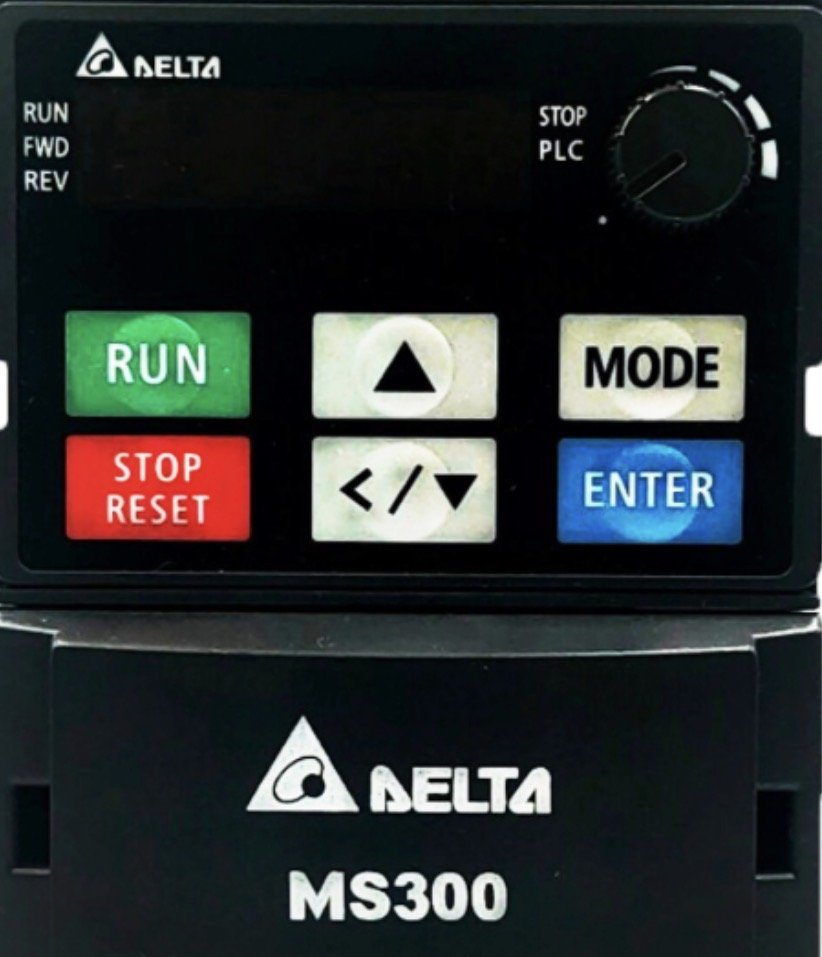

انفرتر VFD9A0MS43ANSAA (3.7 كيلووات، 400 فولت كلاس، 9 أمبير، V/F و SVC) شغّال على موتور حقيقي. اشتغل من الكيباد الـ LED زي الجهاز بالظبط (MODE و ENTER والشيفت بالضغط الطويل)، شغّل من أطراف MI بالزراير، غيّر الباراميترات، اعمل أعطال واعرف تصلحها، وحل التمارين.
اختار تمرين وامشي معاه خطوة بخطوة: التوصيل ← الباراميترات ← التشغيل ← عطل. الصفحة هتوريك اللي محتاجه في كل خطوة بس. عايز المحاكي كله؟ دوس «الوضع الكامل» فوق.

تحكم الستة زراير وبكرة الكيباد (اسحبها لفوق ولتحت) بيان الشاشة ولمبات RUN و STOP و FWD و REV و PLC ولمبة CHARGE
F أمر السرعة ← H تردد الخرج ← U شاشة المستخدم (00-04) ← A التيار ← Frd/rEu الاتجاه ← PLC ← الباراميترات 00-. جوه الباراميترات بيرجع مستوى لورا.End. لو القيمة مرفوضة يكتب Err.00-21=0. STOP/RESET إيقاف، ولو فيه عطل يمسحه.00-20=7.كل مفتاح متوصّل بين طرف MI والكومن بتاع الزراير. الكومن ده لازم يتماشى مع سويتش SINK/SOURCE اللي على الكارت: NPN يبقى الكومن DCM، و PNP يبقى الكومن +24V (اختاره من فوق مخطط التوصيل). زرار MI1 ثابت في 2-wire (دوسة تشغّل ودوسة توقف) ولحظي في 3-wire. في 3-wire خلي مفتاح MI3 مقفول (ده الـ STOP بتاعك) وافتحه عشان توقف. زرار الطوارئ بيقطع S1 و S2 (Safe Torque Off) ودوسة تانية تفكه. دبل كليك على أي مقبض يصفّره.
نفس اللوحة اللي فوق مرسومة بأسلاكها. السلك اللي عليه جهد أو بيمشي فيه تيار بيبقى ملوّن، والمقطوع رمادي. تقدر تدوس على المفاتيح والزراير والسويتشات اللي في الرسمة كمان.
| رقم | الاسم في المانيوال | الوظيفة | القيمة | المصنع | المدى |
|---|
Stop يتغير والانفرتر واقف بس (لو حاولت وهو شغال الكيباد يكتب Err). قراءة بيان بس. الجدول والكيباد بيشتغلوا على نفس الباراميترات، أي تغيير هنا بيبان على الشاشة والعكس. دوس على أي صف يظهر شرحه.
| على الشاشة | الاسم | السبب | الحل |
|---|
6 تطبيقات من اللي بتتعمل في المصانع، كل واحد بالتوصيل والباراميترات وخطوات التجربة. زرار «طبّق في المحاكي» بيوقف الانفرتر لو شغال، ويرجّعه للمصنع على 50 هرتز، ويكتب الجدول بالترتيب، ويظبط لوحة التشغيل، وبعدين يطلعك على الانفرتر. الصفوف الباهتة في الجدول هي الأساس اللي بيتكتب في كل تطبيق.
أرقام الباراميترات والأطراف وأكواد الأعطال مكتوبة من الذاكرة على أساس مانيوال VFD-MS300 (ونسخته GS20)، وممكن تختلف حسب الموديل وإصدار السوفتوير. راجع المانيوال اللي مع الجهاز قبل أي توصيل حقيقي.